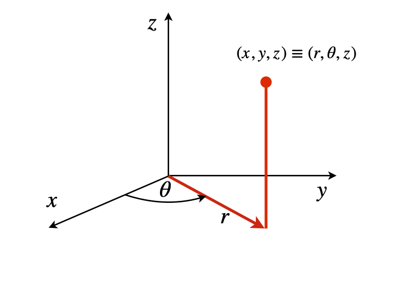

Questions 78 - 86¶
Q78 Center of mass¶
The mass of a flat plate varies as \(f=\sigma \sin(x+y)\) and the plate is cut by the straight lines \(g=x\) and \(h = 2x\) and with \(x = 0 \to 1\), which makes a triangular area in the x-y plane. Calculate the centre of mass and the moments of inertia.
Strategy: Use equations 54 to calculate the centre of mass and 55 for the moments of inertia.
Q79 Orthogonal orbitals (i)¶
Another 3p orbital is
show that this is orthogonal to orbital \(\psi_{311}\) (equation 57). The normalization \(N \) is the same for both orbitals.
Strategy: If two orbitals \(\psi_a\), and \(\psi_{b}\) are orthogonal then \(\displaystyle \int_0^{2\pi}\int_0^\pi\int_0^\infty\psi_a^*\psi_b\sin(\theta)dr d\theta d\varphi=0\). Normalisation is determined by equation 56.
Q80 Orthogonal orbitals (ii)¶
The angular part of the \(d_{x^2-y^2}\) wavefunction is \(N \sin^2(\theta)e^{2i\varphi}\) and that of the \(d_{xy}\) is the complex conjugate of this. Find the normalization \(N\) and show that these two orbitals are orthogonal.
Q81 Using polar coordinates¶
The integral \(\displaystyle I = \int_0^\infty e^{-x^2}dx\) cannot be evaluated in this form. Show that it can be evaluated by forming
and converting to polar coordinates.
Q82 Translational partition function¶
The translational partition function in one dimension is \(\displaystyle Z = \sum_{n=1}^\infty e^{-E_n /K_BT}\)
where \(E_n = n^2h^2/(8mL^2)\) in a box of length \(L\). As the energy levels are so closely spaced they may effectively be considered as being continuous and the sum changed into an integral.
(a) Evaluate this integral and using values for benzene vapour at \(300\) K and 1 bar pressure calculate \(Z^3\) - the three-dimensional partition function is the cube of the one-dimensional value - using the mean free path as the size of the ‘box’.
(b) Calculate the energy gap between two levels at the average thermal energy \(3k_BT/2\). The number you should find is of the order of an NMR transition energy, and much larger than your textbook may indicate because there is no known spectroscopy associated with translational motion the gaps being too small. What is going on here?
(The cross-sectional area for benzene is \(\sigma = 0.88\,\mathrm{ nm^2}\)).
(c) The translational partition function when corrected for the indistinguishability of \(N\) particles is \(\displaystyle Q = \frac{Z^N}{N!}\). From classical thermodynamics the translational entropy at constant volume is
Estimate \(S\) for a mole of mercury vapour at \(300\) K and \(1\) bar assuming that this behaves as an ideal gas.
Q83 Box-Muller transform & random numbers¶
It is sometimes necessary to produce a two-dimensional Gaussian (or normal) distribution of random numbers from a uniform distribution. A commonly used method is the Box - Muller transform. If \(u\) and \(v\) are two uniformly distributed random numbers between \(0 \to 1\), the transform is
where \(x, y\) are two Gaussian distributed numbers.
(a) Prove that \(x, y\) are Gaussian distributed with a mean of zero and a variance of one by calculating the Jacobian \(\displaystyle \frac{ \partial(u, v)}{\partial(x, y)}\). Why is the Jacobian appropriate?
(b) Change the transform equations to produce a distribution with mean \(\mu\) and standard deviation \(\sigma\).
Q84 Jacobian¶
Show that the integral \(\displaystyle \int_0^{\pi/2}\int_0^{\pi/2}\sqrt{\frac{\sin(\varphi)}{\cos(\theta)}}d\varphi d\theta = \pi\) using the substitution \(u = \sin(\varphi)\cos(\theta), v = \sin(\varphi)\sin(\theta)\).
Strategy: Notice that the new coordinates \(u , v\) are defined as functions of the old, not the other way around as in the examples. The Jacobian is normally defined as \(\displaystyle \frac{\partial(old)}{\partial(new)}\) but it is most convenient to calculate this the other way round as \(\displaystyle \frac{\partial(u, v)}{\partial(\varphi, \theta)}\) and then invert the result because just as with normal derivatives, inverting the differentiation order inverts the result or \(\displaystyle \frac{\partial(u,v)}{\partial(\varphi,\theta)}\frac{\partial(\varphi,\theta)}{\partial(u,v)}=1\)
Q85 Jacobian¶
Using Sympy or otherwise, calculate the Jacobian \(\partial(x, y, z)/\partial(u, v, \theta)\) for the confocal elliptical coordinates called ‘prolate spheroidal’ coordinates. The coordinate transformations are, with \(\alpha\) as a constant,
The range of values is \(1 \le u \lt \infty, 11 \le v \le 1, 0 \le \theta \le 2\pi\).
The shape produced by these coordinates is similar to that of a rugby ball, with the z-axis being the long one. As the coordinates are elliptical there are two origins on the z-axis at \((0, 0, \pm\alpha )\) . These coordinates are important in quantum calculations of diatomic molecules because each atom can be placed at an origin.
Q86 Schroedinger equation & expectation values¶
When the energies of an atom or molecule are calculated using the Schroedinger equation, the solutions are stationary states and do not change with time; once an atom or molecule is in that state it will remain there unless something happens to perturb it. If an optical transition between two electronic states is to occur, an oscillating electric dipole must exist in the atom or molecule. This will interact with the oscillating electric field of the radiation and absorption (or stimulated emission) can occur if the radiation’s energy matches that of the two atomic or molecular orbitals. One unit of angular momentum is also transferred between the radiation and the atom or molecule.
The expectation value of a transition with linearly polarized radiation in the z-direction is
where \(\varphi_{1,2}\) are the wavefunctions, \(\alpha\) a collection of constants, normalization, etc., and \(d\tau\) the area element for the integration. If a transition is to occur then this integral must not be zero and this can be determined by the symmetry properties of the integral.
This picture is, however, a static one; if the orbitals are made time dependent, then the oscillating dipole, if it exists, can be observed by examining the product \(\psi_{1,2}^*\psi_{1,2}\) where \(\psi\) is the superposition state \(\psi = (a\varphi_1 + b\varphi_2)\). To find the probability of being in a small region \(z \to z + dz\) at any time \(t\), the integral
where \(a\) and \(b\) are constants that normalize \(\psi\) ; therefore \(a^2 + b^2 = 1\). The integral \(P\) can be evaluated using cylindrical coordinates, which then becomes the double integral
Cylindrical coordinates are used because the s and p\(_z\) orbitals are symmetric about the x- and z-axes.
The time dependence of a wavefunction is always given by
where \(\varphi_j\) is the \(j^{th}\) wavefunction calculated by solving the normal (time-independent) Schroedinger equation. \(E_j\) is the energy.
If an H atom is considered, the 1s, 2s, and 2p atomic orbitals have wavefunctions,
where \(r\) is the radial distance from the origin and the substitution \(z = r \cos(\theta)\) has been made in \(\varphi_{2p_z}\) to convert from spherical polar to cylindrical coordinates, see Figure 28. Note that \(r\) and \(\theta\) in spherical polar coordinates is not the same as \(r\) and \(\theta\) in cylindrical coordinates. For other hydrogenic atoms change \(a_0\to a_0/Z\).

Figure 28 Cylindrical coordinates.
(a) Show that if a wavefunction \(\psi\) is a superposition of stationary states that have the same energy, as do each of the 2s and 2p orbitals, then the time dependence cancels out and there can be no fluctuating dipole.
In (b) and (c) use cylindrical coordinates to show that
(b) if the superposition is
there is no oscillating dipole ans the probability is symmetric about \(z=0\).
(c) if \(\displaystyle \psi=\frac{\sqrt{3}}{2}\varphi_{1s}e^{-iE_{1s}t/\hbar} +\frac{1}{2}\varphi_{2p_z}e^{-iE_{2p_z}t/\hbar}\) the atom does have an oscillating dipole.
(d) Plot some example graphs in (b) and (c).
Strategy: (a) No integration is necessary here, the product \(\psi^*\psi\) can be shown to have no time dependence. Remember that in the complex conjugate \(i \to -i\).
In (b) and (c) expand the terms as in (a) before calculating any integrals. The wavefunctions are written in spherical polar coordinates where the distance to any point \((x, y, z)\) from the origin is \(r\) where \(r = x^2 + y^2 + z^2\). In cylindrical coordinates the same distance from the origin \(r = R^2 + z^2\) but now \(R\) is the radial distance in the x-y plane.